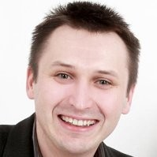
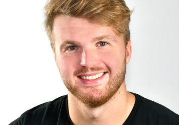
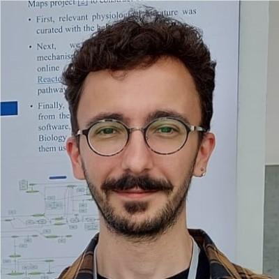
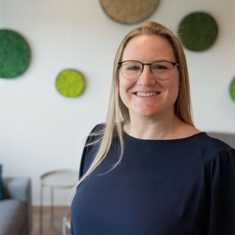

30 October 2026 · Utrecht University
Speakers
Five talks on disease maps, from curation to clinical application. Talk titles and full bios will be added as speakers confirm them.

Marek Ostaszewski
Luxembourg Centre for Systems Biomedicine (LCSB)
University of Luxembourg, Luxembourg
Marie Corradie
HU University of Applied Sciences Utrecht, Netherlands
Talk: Llemy, a user-driven development of an AI interface to explore disease maps

Matti van Welzen
Department of Systems Biology and Bioinformatics
University of Rostock, Germany
Talk: Disease Maps as Infrastructures for Accessible Large-Scale Data Analysis

Luiz Ladeira
Biomechanics Research Unit
University of Liège, Belgium
Talk: From knowledge maps to biological insights

Martina Summer-Kutmon
Maastricht Centre for Systems Biology and Bioinformatics (MaCSBio)
Maastricht University, Netherlands
Talk: A multi-layer disease map to study post-COVID mechanisms
Martina is an associate professor at Maastricht University. Her research group focuses on network biology as a framework for understanding complex disease mechanisms, integrating multi-omics data to model and visualize the molecular processes underlying human health and disease. She is currently leading the post-INFECT project studying post-COVID disease mechanisms across scales (phenotype, (neuro-)imaging, and molecular).